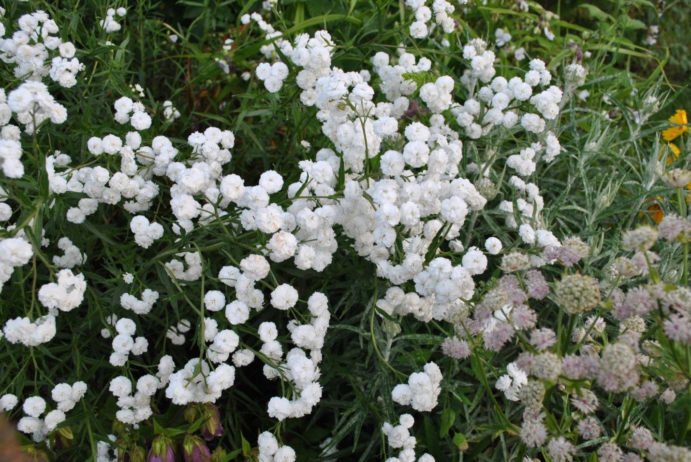
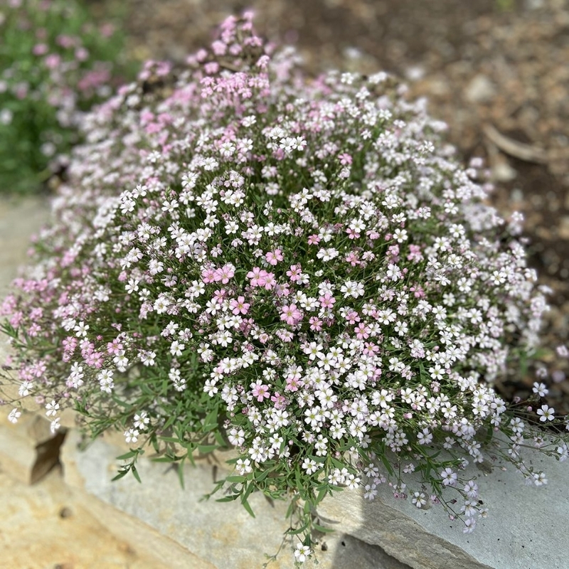
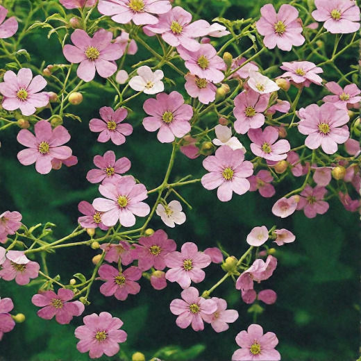
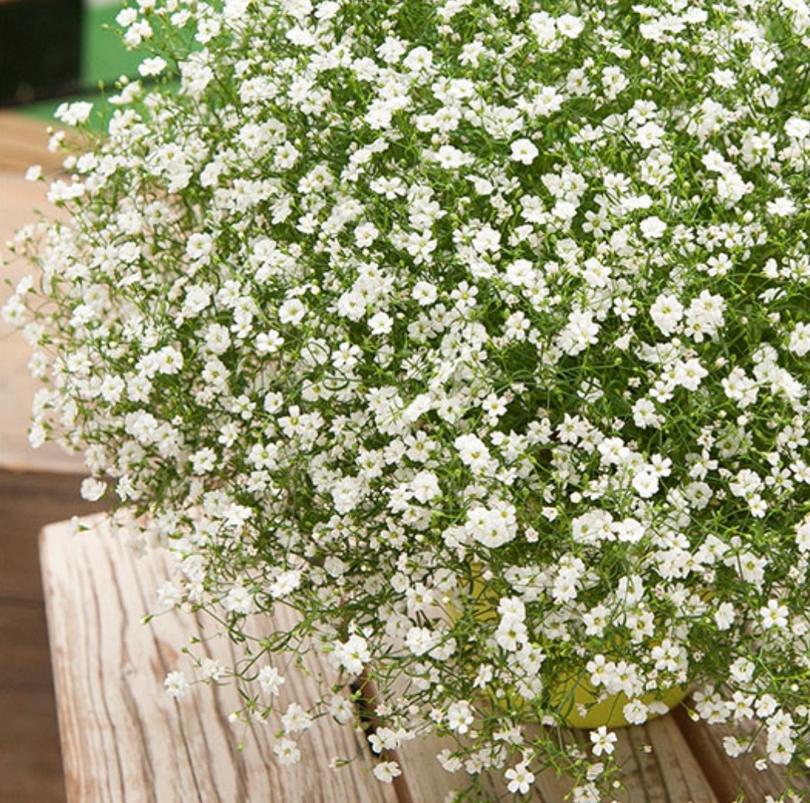

Метельчатая гипсофила
Один из самых популярных и любимых сортов, который восхищает своими пышными, ветвистыми соцветиями. Ее мелкие белые или нежно-розовые цветочки образуют густое ажурное облако, способное украсить любой сад или букет. Это растение невероятно неприхотливо в уходе, а после высыхания превращается в прекрасный сухоцвет, который будет радовать вас своей утонченной красотой круглый год.

Ползучая гипсофила
Этот сорт отличается аккуратными, миниатюрными цветочками, которые создают неповторимый эффект пушистого и невесомого облака. Букет из такой гипсофилы невероятно стоек: он будет долго радовать свежестью в вазе, а со временем превратится в изящный сухоцвет, который сохранит свою форму и красоту на долгие месяцы.

Изящная гипсофила
Истинная классика флористики, которая ценится за свои крупные, эффектные цветы. В отличие от других сортов, её веточки усыпаны более выразительными белыми, розовыми или даже пурпурными чашечками, напоминающими крошечные фарфоровые звездочки. Букет из изящной гипсофилы выглядит невероятно роскошно и самодостаточно, создавая ощущение пышного праздничного облака, которое будет стойко стоять в вазе и долго сохранять свой первозданный вид.

Стенная гипсофила
Удивительный сорт, который восхищает своей утонченной текстурой и невероятной стойкостью. Её веточки усыпаны множеством мелких, звездчатых цветочков глубокого розового или белоснежного оттенка, создающих эффект живого кружева. Букет из стенной гипсофилы смотрится очень нежно и современно, он идеально подходит для создания легких романтических композиций, которые будут долго сохранять свежесть и объем.